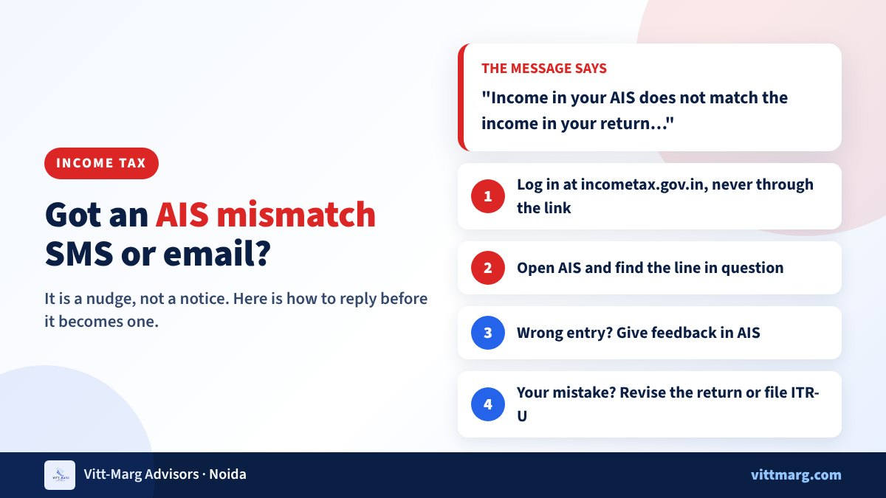

Every year around December, lakhs of people get an SMS or email from the Income Tax Department saying that some income or transaction in their Annual Information Statement (AIS) does not match their return, or that a deduction they claimed looks doubtful. The message usually asks them to "review and revise" before a date. Many panic. There is no need to, but there is a need to act.

Is it a notice?
No. These messages are sent under the department's data-matching and NUDGE campaigns, which compare your return with information from banks, employers, brokers, property registrars and others. They do not carry a section number, a DIN or a demand. But they are a warning: if the gap is not explained, the same data can later be used to pick the return for scrutiny or to issue a notice for income that escaped assessment.
The department has said that in its last campaign, over 15 lakh people revised their returns for assessment year 2025-26 and more than 21 lakh filed updated returns for earlier years after such nudges.
First, make sure the message is genuine
- Do not click any link in the SMS or email. Type incometax.gov.in yourself and log in.
- The department never asks for your OTP, card number or bank password by message or phone.
- Real communications also appear under Pending Actions and the Compliance Portal after you log in.
The common types of message
| What the message says | What it usually means | What to do |
|---|---|---|
| Income in AIS is higher than in your return | Interest, dividend, rent, freelance receipts or a share sale is missing from the ITR | Check AIS line by line, then revise the return or give feedback |
| Deduction or exemption looks ineligible | A claim such as HRA, a donation or a deduction does not match Form 16 or the donee's records | Keep proof if the claim is right; otherwise revise and drop it |
| Refund held for verification | Claims in the return differ from what your employer reported | Reply under e-Proceedings with proof, or revise |
| High-value transaction but no return | A property purchase, large deposit or car purchase shows against your PAN | File a belated return, or reply on the Compliance Portal if no return was due |
| Foreign assets or foreign income | Overseas accounts, shares or RSUs not shown in Schedule FA | Revise and fill Schedule FA, FSI and TR |
Option 1: the AIS entry is wrong, so give feedback
Banks and companies do make mistakes: an FD shown twice, a sale belonging to someone else, or interest that was actually reinvested. Open AIS, select the entry and choose Optional > Feedback. You can mark it as information not fully correct, income belonging to another PAN or year, a duplicate, or a non-taxable item. The feedback goes to the source for confirmation. Keep a copy of the statement that supports your view.
Option 2: your return is wrong, so correct it
| Route | Last date for FY 2025-26 | Extra cost |
|---|---|---|
| Revised return | 31 December 2026 without fee; up to 31 March 2027 with fee | ₹1,000 or ₹5,000 fee after 31 December |
| Belated return, if you never filed | 31 December 2026 | Late fee of ₹1,000 or ₹5,000, plus interest |
| Updated return (ITR-U) | Up to 48 months from the end of the year | 25% to 70% extra on the tax and interest |
A revised return is the cheapest fix while it is available. Once scrutiny or a reassessment has started for that year, these routes may close, so act before the department does.
What if you ignore it?
Nothing happens on the day you ignore it. But the mismatch stays on record. It can lead to scrutiny, an adjustment that raises a demand, interest, and a penalty for under-reporting income, which costs far more than a revised return filed now.
Free tools: check your tax with our income tax calculator (old vs new regime, FY 2026-27), and see every due date in the monthly compliance calendar.
Frequently asked questions
Is an AIS mismatch SMS a legal notice?
No. It is an advisory message under the department's data-matching and NUDGE campaigns. It has no section number or demand, but the mismatch can later lead to scrutiny or a notice if it is not explained.
How do I give feedback on a wrong AIS entry?
Log in at incometax.gov.in, open AIS, select the entry and choose Optional and then Feedback. You can mark it as incorrect, duplicate, belonging to another PAN or year, or not taxable.
What is the last date to revise my ITR for FY 2025-26?
A revised return for FY 2025-26 can be filed without fee until 31 December 2026, and up to 31 March 2027 with a fee of ₹1,000 or ₹5,000.
Can I file ITR-U after getting an AIS mismatch message?
Yes, an updated return can be filed up to 48 months from the end of the year, with extra tax of 25% to 70%, as long as no search, survey or assessment has started for that year.
How can I tell if the income tax SMS is fake?
A genuine message never asks for your OTP, card or bank details. Do not click its link; log in at incometax.gov.in yourself and check Pending Actions and the Compliance Portal.
How Vitt-Marg helps
We file income tax returns, revised and updated returns, and reply to AIS mismatches and notices for salaried people, professionals and businesses. Send us the message or notice you received and we will tell you what it needs.
General information, current as of 22 November 2026, not advice for a specific case. Notifications and rules change often, so check with us before acting on it.